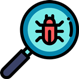
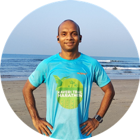
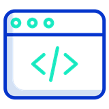
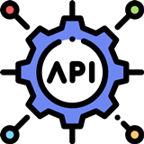

I am proficient in formulating software testing strategies and performing its related activities.
Automation Testing
Manual testing

WebSite Testing

API testing
Mobile testing
I am prepared for the next challenge in my career and look forward to hearing from you.